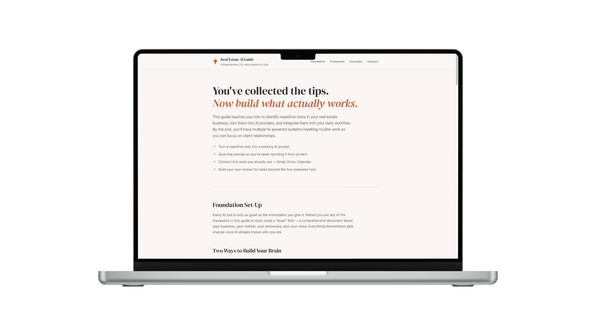

AI Guides + Function Maps

The Challenge
AI capabilities change constantly. The information around them is either too technical, fragmented across a dozen sources, or so simplified it doesn't actually help anyone implement anything. People need a clearer way to understand what AI can actually do and how it applies to their specific work.
What I Did
I researched the tools and capabilities, then organized the complexity into practical frameworks. The Real Estate AI Guide shows agents how to think about AI, what it's actually useful for, and how to implement it in their workflows. I'm building similar guides for other industries using the same approach.
This combines research, information architecture, content strategy, and my background in product and technical work.
Outcome
Practical guides that translate a constantly shifting landscape into something people can understand and actually use. The work also shows I can take large amounts of complex information and structure it into something digestible and actionable.